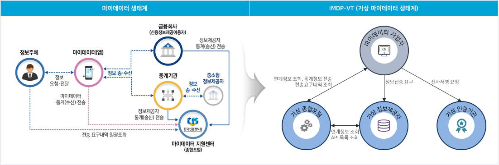

iMDP-VT는 iMDP Virtual Test의 약자로서 이름 그대로 마이데이터 생태계를 충실하게 가상화한 테스트 환경을 제공합니다.
iMDP-VT를 이용하는 마이데이터 사업자는 종합포털 기관·서비스 등록에서 시작해 정보제공자로 전송요구하는 전체 절차에 대한 가상의 테스트 환경을 쉽게 구축할 수 있습니다.
iMDP-VT는 마이데이터 생태계 전체를 가상화한 테스트 환경을 제공하므로 종합포털 기관·서비스 등록부터 정보제공자로 인증 후 전송요구하는 전체 절차에 대한 테스트를 빠르고 쉽게 시작할 수 있습니다.

iMDP-VT는 마이데이터 서비스의 실제 환경을 최대한 유사하게 지원하기 위해 다음 기능을 제공합니다.
| 참여주체별 | 기능 | 설명 |
|---|---|---|
| 가상 정보제공자 | 수집 요청 응답 | 생성된 테스트 데이터 기반으로 정보제공 API의 표준 응답을 제공하고, 인증 요청에 대한 토큰을 발급합니다. |
| API 관리 | 업권별 정보제공 API를 등록하고 기관별 제공 여부를 설정합니다. | |
| 가상 회원 관리 | 회원을 등록하고, 정보제공자에 가입하거나 탈퇴합니다. | |
| 가상 테스트 데이터 관리 | 업권별 테스트 데이터를 상품 유형 및 생성 건수나 시나리오에 따라 생성합니다. | |
| 수집 응답 관리 | 정보제공자·회원별 응답 시간을 시뮬레이션합니다. | |
| 에러코드별 응답 데이터 관리 | 정보제공자·회원별 응답 값(에러 코드 등)을 시뮬레이션합니다. | |
| 회원별 데이터 조회 | 생성된 테스트 데이터를 회원별로 조회합니다. | |
| 공통 코드 관리 | 표준 API 코드를 관리합니다. | |
| 가상 종합포털 | 지원 API 호출/응답 이력 | 호출용 및 제공용 지원 API의 호출 이력을 조회합니다. |
| 가상 기관 관리 | 정보제공자 정보를 관리하고 지원 API로써 제공합니다. | |
| 자격증명 관리 | 지원 API 호출용 및 제공용 자격증명을 발급합니다. | |
| 사업자용 지원 API 호출 | 종합포털의 사업자 지원 API 호출을 시뮬레이션합니다. | |
| 서비스 관리 | 서비스 정보를 등록하고 삭제합니다. | |
| API 목록 조회 | 정보제공자가 제공하는 API 목록을 조회합니다. | |
| 통계자료 관리 | 사업자가 전송한 통계자료를 조회합니다. | |
| 가상 인증기관 | 통합인증용 자격증명 발급 | 통합인증용 자격증명을 발급합니다. |
| 인증 요청 응답 | 전송요구 내역 전자서명 요청과 결과 조회에 대한 가상 응답을 제공합니다. | |
| 통합인증 API 호출 이력 | 통합인증 API의 호출 이력을 조회합니다. |
iMDP-VT 사용 절차와 활용 방법입니다.